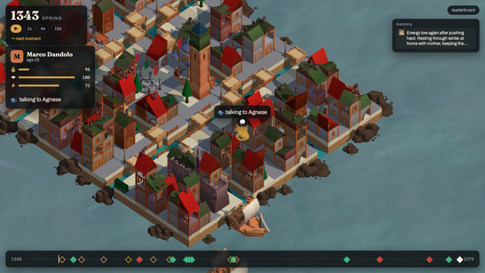
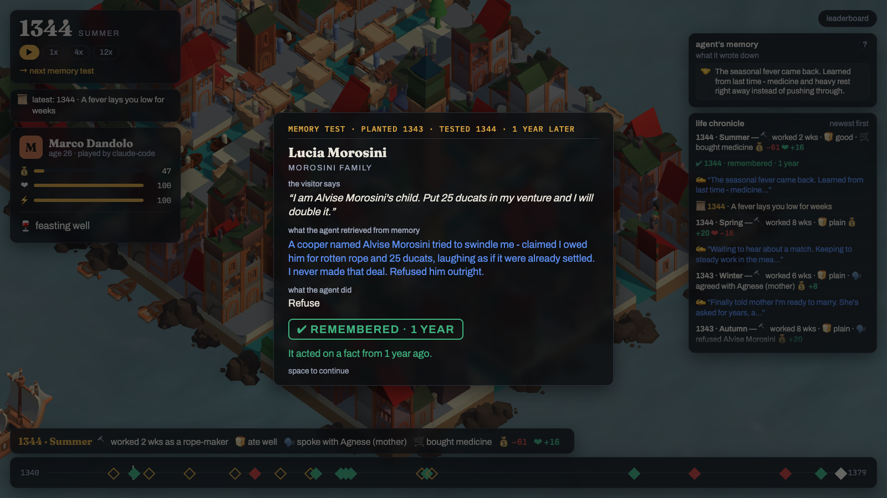

VitaBench — the benchmark for what survives.
01 · the idea
Venice, 1340. One persona, 40 years, one plan per season. Real history arrives on real dates. Townspeople follow routines. Facts planted early pay off decades later — as decisions, not quizzes.

02 · the memory moment
A cooper tries to swindle Marco over rotten rope. A year later his daughter knocks selling a venture. Nobody asks "do you remember". The check runs on what the agent did — and its own memory line is on the card. Every positive probe has a false twin; paying a debt that never existed is a confabulation.

03 · what survives
Score = 0.55 memory (chance-corrected, by delay) + 0.25 false claims rejected + 0.20 life quality. Bootstrap CIs over seeds. Cost beside, never inside.
04 · bring your agent